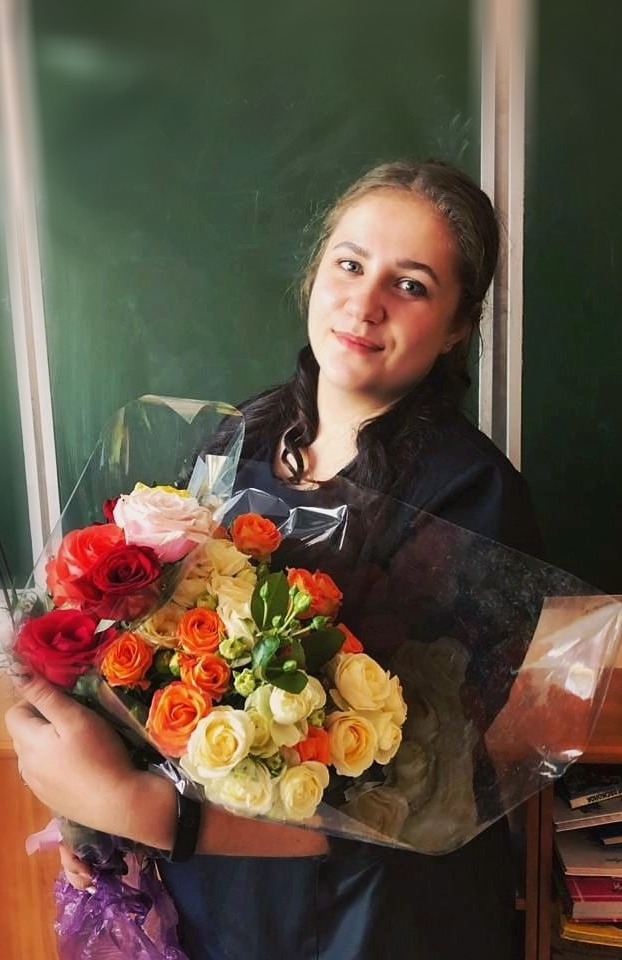

| 
|
Терунова Анастасия Алексеевна
УЧИТЕЛЬ НАЧАЛЬНЫХ КЛАССОВ.
Имею большой опыт в работе с детьми, стаж работы 3 года. В данный момент являюсь частным репетитором. Моя цель - научить работать с текстом, твердо выучивать базовые правила и умело оперировать ими, легко искать и анализировать нужную информацию.
Обучение на самом высоком уровне. Мне есть ,что рассказать даже самым лучшим ученикам спецшкол. Помогаю ученикам перебороть страх и обрести веру в себя. Вы увидите, что математика - увлекательный мир, который станет для ребенка понятным и простым. На занятиях русского языка формирую навыки грамотного письма - от знания правил до их применения. Умею найти индивидуальный подход к личности ребенка. Особое внимание уделяю развитию устной и письменной речи, расширению словарного запаса. Для дошколят: учиться читать, писать и считать можно с радостью и удовольствием.
С пониманием отношусь к различным жизненным эпизодам. Для меня очень важно иметь взаимный контакт с учеником. Больше всего я люблю очные индивидуальные занятия, когда происходит непосредственное живое общение, энергообмен с учеником. Хорошее настроение, уважение друг к другу, общение и игра - наши главные помощники на занятиях. Я умею зажигать звездочки в маленьких учениках, раскрыть способности каждого.Помогу вашему ребенку на индивидуальных занятиях:
1. Учение с увлечением.
2. Домашка на отлично.
3.Скоро в школу.
Работаю на опережение, над ликвидацией пробелов, готовлю к ВПР, к поступлению в 1 класс.
|